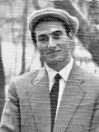
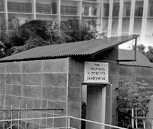

Chassidic Encounters Behind the Iron Curtain
In a number of previous installments, we read about Rabbi Hillel Zaltzman’s travels in the Soviet Union for the purpose of communal work. Each one of these trips was an adventure. Aside from the main purpose of the trip, he took the opportunity to meet Chassidim and ordinary Jews in the cities he passed through. In this chapter, he tells about surprising encounters, the discovery of Chassidishe neshamos, and stories that he heard.
Prepared for publication by Avrohom Rainitz
SURPRISING ENCOUNTER WITH MULLE MOCHKIN

I heard about a factory like this in Tashkent, and I went there. After I located it and I saw that their merchandise suited me, I asked to speak with the manageress, an Uzbeki, Moslem woman. I prepared a bribe to move things along but, to my disappointment, when I entered her office another man with a Jewish face walked in too and sat at the table. Under the circumstances, I couldn’t talk about bribes.
I really didn’t want to speak to her with a stranger sitting in the room because I was afraid he would interfere with the deal. I asked the woman who the man was and she said he was her assistant. I saw that I had no choice; I would have to present my request despite his presence.
I introduced myself as Gilya Zaltzman and said I ran a workshop that manufactured labels in Samarkand and the remnants of her factory would meet our needs. I suggested that instead of throwing out the material, she should sell it to me at a low price so we would all benefit.
She said she had to consult with others. I figured that meant she would consult with her assistant; who knew whether he would ruin the plan or not.
When I left her office, the assistant left too, and to my amazement he asked me: “Are you the son of Avrohom Zaltzman?”
Completely taken aback, I said “Yes,” and asked him, “Who are you?”
“I am Shmuel Mochkin.”
When he observed from my expression that I still did not know who he was, he added, “I am Mulle Peretz’s (Reb Shmuel the son of Rabbi Peretz).”
I was very excited to see the son of Reb Peretz Mochkin. I remembered that I had heard a lot about Rabbi Peretz’s two sons, Yosef and Shmuel, who had not been able to leave Russia with their father in the big exodus of 1946 and had remained for many years in prison. I had just recently heard that they had been released from jail. We fell upon one another in joy and had a long, friendly discussion as though we had known one another for years.
He told me that when he saw me walk in, he saw I had a Jewish face and realized I was one of Anash. Since he didn’t know what I wanted, he decided to listen to my request and make sure the manageress agreed.
After that, whenever I went to Tashkent, I visited R’ Mulle. He always hosted me for lunch and we enjoyed spending time together.
THE OUTSTANDING BACHUR FROM TASHKENT
Over the years, I traveled to many places and met different people, but there were a few who left a strong impression on me. One of them was a bachur I will tell you about now.
On my first few trips to Tashkent for communal matters, I did not know Anash there and I did not know where to stay. When I spoke about this with my brother Berel, he suggested I meet with his chavrusa.
Years before, when Berel became bar mitzva, there were no boys his age in Samarkand who were able to learn Gemara. My father sent him to Tashkent, where he learned with another Chassidishe bachur by the name of Reb Zalman Posner (Buber) who was a talmid in Yeshivas Tomchei T’mimim in Lubavitch. Reb Zalman was the mara d’asra for Anash in Tashkent. He was very hoarse and they said this was because of his constant Torah study in a loud voice. My brother and his friend learned with him for a year.
Berel remembered that this bachur worked in an office supplies store. “Go to that store and tell him you are Hilke Zaltzman, Berel’s brother, and that I trust he will arrange a place for you to stay,” said my brother, and he described how to get to the store. Upon arriving in Tashkent, I easily found the store according to his precise directions.
When I walked in, with my suitcase in hand, I saw a thin bachur dealing with customers in a quick manner. Later, I learned that by nature he was very quick. A few moments later, our eyes met and I could tell that he understood that I was a Lubavitcher bachur.
When he finished with one of the customers and was standing behind the counter, I went over to greet him. Before I could introduce myself, he quickly said, “Wait a few minutes. I’ll close the store and we’ll go together.” It was 11:30, but he announced to the remaining customers that he had to close the store immediately. At first I felt uncomfortable that he was leaving work because of me, but I relaxed when I saw that he was quite happy for the interruption.
After quickly finishing with the customers and locking the store, he grabbed my suitcase with a friendly smile while saying, “Hachnasas orchim begins when you meet the guest.”
The slender bachur walked in front of me with the suitcase. I followed as I thought: He didn’t even ask me my name yet! I saw that it did not matter to him who I was and where I had come from. Perhaps he preferred not to ask too many questions because in those days we were wary about asking unnecessary questions, even among Anash. As we walked, I told him that I am Berel’s brother. He asked how Berel was doing, but I didn’t notice any particular surprise in his voice. My yichus made no difference to him; the main thing was that I was a Lubavitcher bachur; that was enough for him.
He was still single and lived with his parents. When we arrived at his house he did not ask me whether I was hungry, but immediately sat me down at the table and served me a fine meal. He realized that if I had been traveling, I must be hungry. He conducted himself in an exceptionally fine way. He thought I might not eat just anywhere, and therefore did not urge me to eat any particular thing. He simply took out whatever was in the refrigerator and put it on the table so I could choose what I liked.
From then on, every time I went to Tashkent, even after I had met many other Lubavitchers and I had several options of places to stay, I would always stay at his home. Over the years, I became very close with his family.
Superficially, he looked like a simple bachur. He also acted in a simple fashion. But when I watched him, I saw his p’nimius. He had a good head and knew how to learn. He once said to me: “Hilke, it’s a shame that people don’t put a little effort into learning Kitzur Shulchan Aruch. If they would learn just one s’if a day – and that’s not difficult to learn by heart – over a few years it is possible to learn the entire Kitzur Shulchan Aruch by heart!” He would say in a lighthearted tone, “You know you don’t really need to know how to learn in order to be a rabbi; you just need to know where to find the Halacha.”
Although he conducted himself simply and modestly, after staying in his parents’ home just a few times I got to know him well and was very impressed by him. I saw how he came back home at night, exhausted, after an entire day of standing in the store and serving customers. His devoted mother prepared a hot supper for him, but he did not eat it until he had davened Maariv slowly. By then the food was cold, but that did not bother him. After the meal, he learned his set shiurim in Nigleh and Chassidus. Tired from the day’s work, he would nod off a few times while learning. But each time, after a few minutes, he would wake up and continue learning. He finished his shiurim close to midnight and stood up to read the bedtime Shma slowly, as befits a Chassidishe bachur. Then he would sit on the sofa or on the bed, remove his shoes, and fall asleep.
When Reb Mendel Futerfas stayed in Tashkent on his way to Samarkand in Elul 5722/1962, he saw this bachur at a farbrengen and was very impressed by him. He said he was a bachur who was “an Oved Hashem and a person of stature; and the main thing – he was not ostentatious about it.” That was the greatest quality as far as Reb Mendel was concerned.
JEWISH PRIDE ON A PLANE
I heard a lot about Rabbi Eliyahu Bisk, the son of Reb Yitzchok Bisk, a Skverer Chassid and the son-of-law of the shochet Rabbi Yisroel Konson. They said about him that although he had completed university, he remained a genuine Yerei Shamayim (G-d fearing Jew) and he even served as the baal koreh (Torah reader) in the secret Lubavitcher minyan in Udelnaya, a suburb of Moscow. I heard that he worked in a big factory in Moscow and nevertheless he managed to keep Shabbos. It was very unusual for someone to work professionally in a government factory and keep Shabbos.
In general, to be a religious Jew in the Soviet Union was extremely difficult; under conditions like that, it was nearly impossible. Not surprisingly, they said about him that he managed to enter the communist furnace (by learning in university and by working in a government factory) and emerge unscathed.
It should be noted that although Anash generally did not send their children to government schools, and certainly not to university, there were places, especially in the big cities, where going to university was the lesser of two evils. The Soviet Union had an obligatory draft, and whoever failed to convince the medical committee that he deserved an exemption could avoid army duty only if he attended university. Students did not have to serve in the army. Since it was harder to gain an exemption in the big cities, going to university was the only way out.
In my travels on various missions to Moscow, I had several opportunities to stay with his father-in-law Rabbi Yisroel Konson, and that is how I saw him and got to know what he looked like.
Once, on a flight from Moscow, I saw Reb Eliyahu get on the plane and sit down in the front in the row opposite mine. He did not notice me and I thought: It will be interesting to see how he behaves when he doesn’t realize other Jews are present. In those days, people were exceedingly careful not to display their Judaism. We had ever-present paranoid thoughts about the people around us belonging to the KGB.
My fears dissipated after he put away his belongings and removed his cap, leaving a Chassidishe yarmulke on his head. Then he took out a Tikkun L’Kor’im and throughout the flight he prepared the Torah reading. I took great pleasure in this surrealistic sight of a yarmulke-bearing Chassid sitting among dozens of gentiles in Soviet Russia, immersed in his Tikkun and oblivious to his surroundings.
When the stewardess served him a meal, I thought: I wonder what he will choose to eat, for sometimes there are fruits or seeds that can be eaten. He did not even look at what was served. He motioned that he did not want anything and continued what he was doing. Later on, he took homemade food out of his bag and ate it.
BOX 1: A FIRE EMERGED FROM THE HOUSE OF G-D 
I replied: “Boruch Hashem it’s that way and not the reverse.”
Reb Yosef once told me about a miracle he witnessed. A man would come every year to Reb Levi Yitzchok’s gravesite. He would first go to Reb Yosef’s house, where he stayed, and then he would go to the gravesite with Reb Yosef. He would generally spend a long time davening there, about two hours, and Reb Yosef would wait for him outside.
One year, the man went inside and Reb Yosef waited outside as usual, but a very short time later he saw the man run out in a fright. He said to Reb Yosef: “Take me right back; I must go home.”
Reb Yosef asked: “What’s the rush? What happened?”
The man nervously said: “Come, come. I’m going home immediately.”
“What happened?” asked Reb Yosef once again.
The man, who was still frightened, said: “When I started davening, I saw a fire come out of the grave, right in front of me!”
Reb Yosef went inside to see what was going on and came right back out and said: “You are imagining things. Have you lost your mind? There is nothing there!”
But the man insisted: “Take me to the airport. I must fly home.”
Afterward, he found out that the man’s son was friendly with a gentile girl; just as the father went to the gravesite, the son had proposed to his girlfriend.
Hzaltzman. "Chassidic Encounters Behind the
Iron Curtain." Beis Moshiach, no. 828 (March 22, 2012).